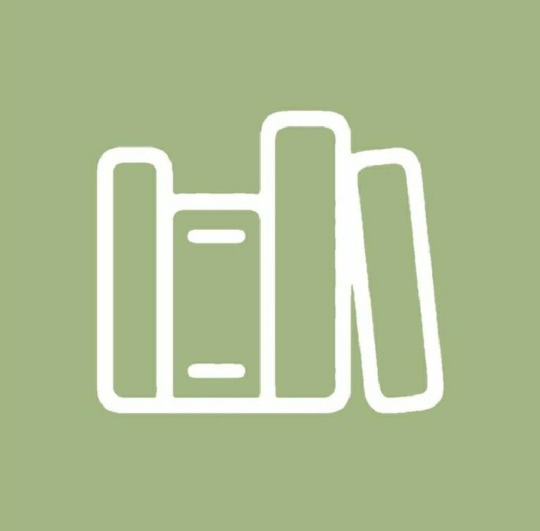

Menu cố định hằng ngày
Vì sao “Healthy & Eat Clean Food” ra đời?
Thấu hiểu những băn khoăn khi bắt đầu ăn healthy, chúng tôi ở đây để giúp sinh viên và người trẻ tại Hoà Lạc ăn lành mạnh dễ hơn và tiết kiệm thời gian hơn mỗi ngày.
CookTrust - Healthy & Eat Clean Food mang đến giải pháp eat clean phù hợp, không cầu kỳ nhưng vẫn đảm bảo dinh dưỡng cần thiết. Với chúng tôi, mỗi bữa ăn phải là một trải nghiệm có cảm xúc, để việc ăn healthy không còn khô khan, mà trở thành một thói quen dễ duy trì và một phần tự nhiên trong lối sống lành mạnh của bạn.
Tính năng cốt lõi

Menu đa dạng
